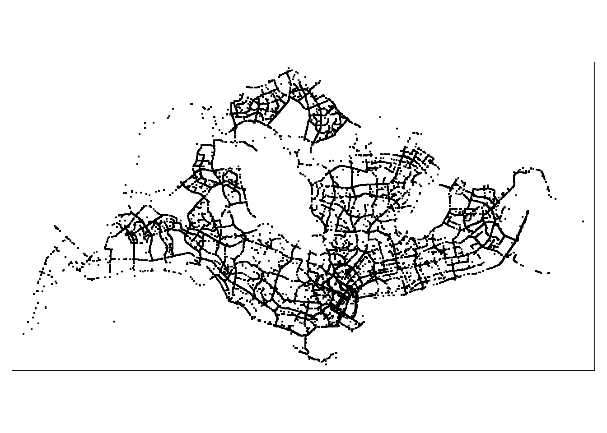

pacman::p_load(arrow, lubridate, tidyverse,
maptools, sf, spNetwork,
raster, spatstat, tmap)Take-home_Ex1
Getting Started
1. Loading of Data
1.3 Loading of Master Plan 2019 Subzone Boundary (No Sea) from Data.gov.sg
mpsz <- st_read(dsn = "data/MPSZ-2019",
layer = "MPSZ-2019")Reading layer `MPSZ-2019' from data source
`C:\Users\Kachel Lee\ka33rina\IS415GAA\Take-home_Ex\Take-home_Ex1\data\MPSZ-2019'
using driver `ESRI Shapefile'
Simple feature collection with 332 features and 6 fields
Geometry type: MULTIPOLYGON
Dimension: XY
Bounding box: xmin: 103.6057 ymin: 1.158699 xmax: 104.0885 ymax: 1.470775
Geodetic CRS: WGS 84mpsz3414 <- st_transform(mpsz, 3414)2. Extracting Geospatial Data Layer
sf_grab_origin_data <- read_rds("data/rds/sf_grab_origin_data.rds")summary(sf_grab_origin_data) trj_id driving_mode osname pingtimestamp
Length:28000 Length:28000 Length:28000 Min. :1.555e+09
Class :character Class :character Class :character 1st Qu.:1.555e+09
Mode :character Mode :character Mode :character Median :1.555e+09
Mean :1.555e+09
3rd Qu.:1.556e+09
Max. :1.556e+09
speed bearing accuracy
Min. :-1.00 Min. : 0.0 Min. : 1.400
1st Qu.: 6.25 1st Qu.: 90.0 1st Qu.: 3.900
Median :11.10 Median :179.0 Median : 6.000
Mean :10.75 Mean :172.6 Mean : 7.476
3rd Qu.:15.19 3rd Qu.:256.0 3rd Qu.: 10.000
Max. :31.71 Max. :359.0 Max. :547.000
pingtimstamp weekday start_hr day
Min. :2019-04-08 00:09:40.00 Sun:3983 10 : 2106 17 : 2012
1st Qu.:2019-04-11 08:48:39.50 Mon:3975 9 : 2100 18 : 2008
Median :2019-04-15 00:08:50.50 Tue:4008 0 : 1935 12 : 2007
Mean :2019-04-14 21:30:13.19 Wed:4016 1 : 1921 9 : 2004
3rd Qu.:2019-04-18 10:48:07.00 Thu:4008 7 : 1540 16 : 2004
Max. :2019-04-21 23:34:01.00 Fri:4002 8 : 1538 13 : 2004
Sat:4008 (Other):16860 (Other):15961
geometry
POINT :28000
epsg:3414 : 0
+proj=tmer...: 0
tmap_mode('plot')
tm_shape(sf_grab_origin_data)+
tm_dots()
2.2 Extracting Road Layer within Singapore excluding outer islands
sf_roads_in_sg <- read_rds("data/rds/sf_roads_in_sg.rds")2.3 Extracting Singapore boundary layer excluding outer islands
outer_islands <- mpsz3414[grep("island", mpsz3414$PLN_AREA_N, ignore.case = TRUE), ]
print(outer_islands)Simple feature collection with 6 features and 6 fields
Geometry type: MULTIPOLYGON
Dimension: XY
Bounding box: xmin: 8012.578 ymin: 15748.72 xmax: 56396.44 ymax: 46931.6
Projected CRS: SVY21 / Singapore TM
SUBZONE_N SUBZONE_C PLN_AREA_N PLN_AREA_C
4 JURONG ISLAND AND BUKOM WISZ01 WESTERN ISLANDS WI
7 SUDONG WISZ03 WESTERN ISLANDS WI
8 SEMAKAU WISZ02 WESTERN ISLANDS WI
9 SOUTHERN GROUP SISZ02 SOUTHERN ISLANDS SI
10 SENTOSA SISZ01 SOUTHERN ISLANDS SI
304 NORTH-EASTERN ISLANDS NESZ01 NORTH-EASTERN ISLANDS NE
REGION_N REGION_C geometry
4 WEST REGION WR MULTIPOLYGON (((14557.7 304...
7 WEST REGION WR MULTIPOLYGON (((15772.59 21...
8 WEST REGION WR MULTIPOLYGON (((19843.41 21...
9 CENTRAL REGION CR MULTIPOLYGON (((30870.53 22...
10 CENTRAL REGION CR MULTIPOLYGON (((26879.04 26...
304 NORTH-EAST REGION NER MULTIPOLYGON (((52567.44 46...merged_map <- st_union(mpsz3414, outer_islands)map_without_outer_islands <- st_difference(mpsz3414, st_union(outer_islands))sf_map_without_outer_islands <- st_cast(map_without_outer_islands, "POLYGON")3. Traditional Kernel Density Estimation layers
To reduce the data size and focus on one specific area, I will be doing the analysis on Punggol town.
3.1 Creating Sg_boundary owin object
sg_sf <- sf_map_without_outer_islands %>%
st_union()#|eval: false
plot(sg_sf)grab_origin_ppp <- as.ppp(sf_grab_origin_data)summary(grab_origin_ppp)Marked planar point pattern: 28000 points
Average intensity 2.47621e-05 points per square unit
Coordinates are given to 3 decimal places
i.e. rounded to the nearest multiple of 0.001 units
marks are of type 'character'
Summary:
Length Class Mode
28000 character character
Window: rectangle = [3661.47, 49845.23] x [25201.14, 49685.08] units
(46180 x 24480 units)
Window area = 1130760000 square units#|eval: false
plot(grab_origin_ppp)
summary(grab_origin_ppp)Marked planar point pattern: 28000 points
Average intensity 2.47621e-05 points per square unit
Coordinates are given to 3 decimal places
i.e. rounded to the nearest multiple of 0.001 units
marks are of type 'character'
Summary:
Length Class Mode
28000 character character
Window: rectangle = [3661.47, 49845.23] x [25201.14, 49685.08] units
(46180 x 24480 units)
Window area = 1130760000 square unitssg_owin <- as.owin(sg_sf)
summary(sg_owin)Window: polygonal boundary
31 separate polygons (29 holes)
vertices area relative.area
polygon 1 12458 6.62835e+08 9.98e-01
polygon 2 285 1.61128e+06 2.43e-03
polygon 3 (hole) 41 -4.01660e+04 -6.05e-05
polygon 4 (hole) 317 -5.11280e+04 -7.70e-05
polygon 5 (hole) 3 -4.14099e-04 -6.23e-13
polygon 6 (hole) 4 -2.86396e-01 -4.31e-10
polygon 7 (hole) 3 -1.81439e-04 -2.73e-13
polygon 8 (hole) 3 -8.68789e-04 -1.31e-12
polygon 9 (hole) 3 -5.99535e-04 -9.02e-13
polygon 10 (hole) 3 -3.04561e-04 -4.58e-13
polygon 11 (hole) 3 -4.46076e-04 -6.71e-13
polygon 12 (hole) 3 -3.39794e-04 -5.11e-13
polygon 13 (hole) 3 -4.52043e-05 -6.80e-14
polygon 14 (hole) 3 -3.90173e-05 -5.87e-14
polygon 15 (hole) 3 -9.59850e-05 -1.44e-13
polygon 16 (hole) 4 -2.54488e-04 -3.83e-13
polygon 17 (hole) 4 -4.28453e-01 -6.45e-10
polygon 18 (hole) 4 -2.18616e-04 -3.29e-13
polygon 19 (hole) 5 -2.44411e-04 -3.68e-13
polygon 20 (hole) 5 -3.64686e-02 -5.49e-11
polygon 21 (hole) 6 -8.37554e-01 -1.26e-09
polygon 22 (hole) 38 -7.79904e+03 -1.17e-05
polygon 23 (hole) 3 -3.41897e-05 -5.15e-14
polygon 24 (hole) 3 -3.65499e-03 -5.50e-12
polygon 25 (hole) 3 -4.95057e-02 -7.45e-11
polygon 26 (hole) 5 -2.92235e-04 -4.40e-13
polygon 27 (hole) 3 -7.43616e-06 -1.12e-14
polygon 28 (hole) 270 -1.21455e+03 -1.83e-06
polygon 29 (hole) 19 -4.39650e+00 -6.62e-09
polygon 30 (hole) 35 -1.38385e+02 -2.08e-07
polygon 31 (hole) 23 -1.99656e+01 -3.01e-08
enclosing rectangle: [2667.54, 50284.23] x [21448.47, 50256.33] units
(47620 x 28810 units)
Window area = 664346000 square units
Fraction of frame area: 0.484sg_grab_origin_ppp = grab_origin_ppp[sg_owin]
summary(sg_grab_origin_ppp)Marked planar point pattern: 27875 points
Average intensity 4.195855e-05 points per square unit
Coordinates are given to 3 decimal places
i.e. rounded to the nearest multiple of 0.001 units
marks are of type 'character'
Summary:
Length Class Mode
27875 character character
Window: polygonal boundary
31 separate polygons (29 holes)
vertices area relative.area
polygon 1 12458 6.62835e+08 9.98e-01
polygon 2 285 1.61128e+06 2.43e-03
polygon 3 (hole) 41 -4.01660e+04 -6.05e-05
polygon 4 (hole) 317 -5.11280e+04 -7.70e-05
polygon 5 (hole) 3 -4.14099e-04 -6.23e-13
polygon 6 (hole) 4 -2.86396e-01 -4.31e-10
polygon 7 (hole) 3 -1.81439e-04 -2.73e-13
polygon 8 (hole) 3 -8.68789e-04 -1.31e-12
polygon 9 (hole) 3 -5.99535e-04 -9.02e-13
polygon 10 (hole) 3 -3.04561e-04 -4.58e-13
polygon 11 (hole) 3 -4.46076e-04 -6.71e-13
polygon 12 (hole) 3 -3.39794e-04 -5.11e-13
polygon 13 (hole) 3 -4.52043e-05 -6.80e-14
polygon 14 (hole) 3 -3.90173e-05 -5.87e-14
polygon 15 (hole) 3 -9.59850e-05 -1.44e-13
polygon 16 (hole) 4 -2.54488e-04 -3.83e-13
polygon 17 (hole) 4 -4.28453e-01 -6.45e-10
polygon 18 (hole) 4 -2.18616e-04 -3.29e-13
polygon 19 (hole) 5 -2.44411e-04 -3.68e-13
polygon 20 (hole) 5 -3.64686e-02 -5.49e-11
polygon 21 (hole) 6 -8.37554e-01 -1.26e-09
polygon 22 (hole) 38 -7.79904e+03 -1.17e-05
polygon 23 (hole) 3 -3.41897e-05 -5.15e-14
polygon 24 (hole) 3 -3.65499e-03 -5.50e-12
polygon 25 (hole) 3 -4.95057e-02 -7.45e-11
polygon 26 (hole) 5 -2.92235e-04 -4.40e-13
polygon 27 (hole) 3 -7.43616e-06 -1.12e-14
polygon 28 (hole) 270 -1.21455e+03 -1.83e-06
polygon 29 (hole) 19 -4.39650e+00 -6.62e-09
polygon 30 (hole) 35 -1.38385e+02 -2.08e-07
polygon 31 (hole) 23 -1.99656e+01 -3.01e-08
enclosing rectangle: [2667.54, 50284.23] x [21448.47, 50256.33] units
(47620 x 28810 units)
Window area = 664346000 square units
Fraction of frame area: 0.484plot(sg_grab_origin_ppp)kde_grab_bw <- density(sg_grab_origin_ppp,
sigma=bw.diggle,
edge=TRUE,
kernel="gaussian") plot(kde_grab_bw)